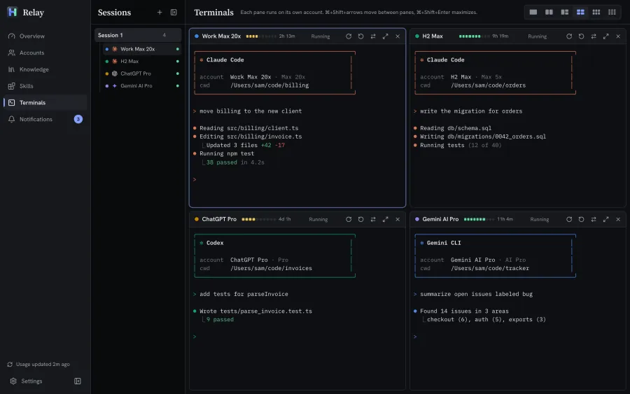
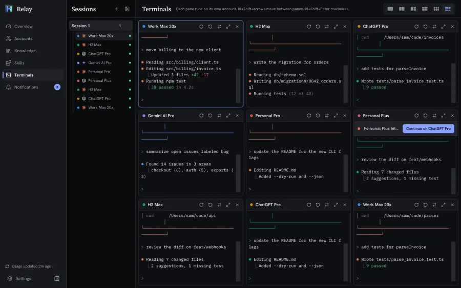

Live limits
5-hour session, weekly, weekly Opus, Codex windows, Gemini model quotas and Copilot premium requests, each with a reset countdown.
Design system
Relay keeps every AI account you pay for signed in side by side, shows how much of each limit is left, and opens the right CLI in one click.
v0.2.1 for Windows, macOS and Linux.

Works with
Panels
5-hour session, weekly, weekly Opus, Codex windows, Gemini model quotas and Copilot premium requests, each with a reset countdown.
A notification when an account is nearly out, when it hits a limit, when it comes back, and before quota resets unused.
Opens your terminal with the right account, or resumes your last session. Press Ctrl K to find any account.
Terminal grid
Each pane runs on its own account, with its meter in the pane header.
Split the window into as many as nine panes and keep every CLI in view.


Video loop